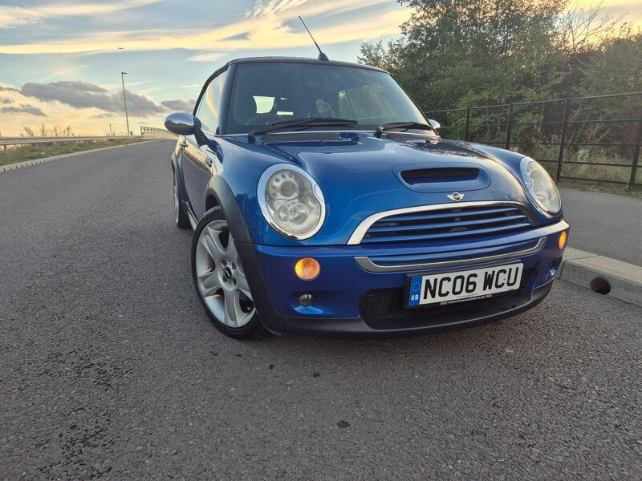
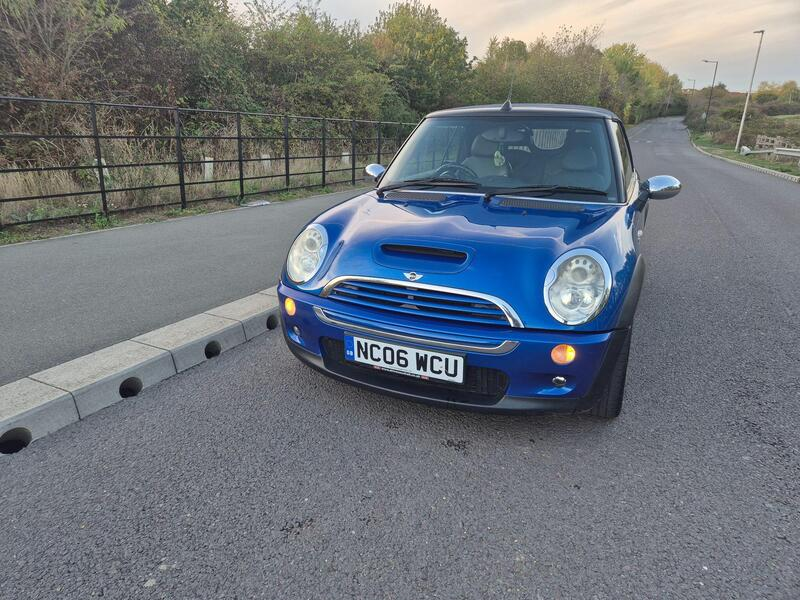
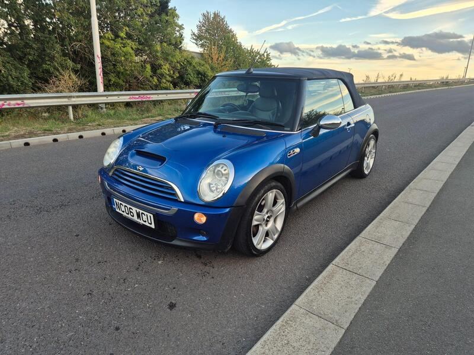
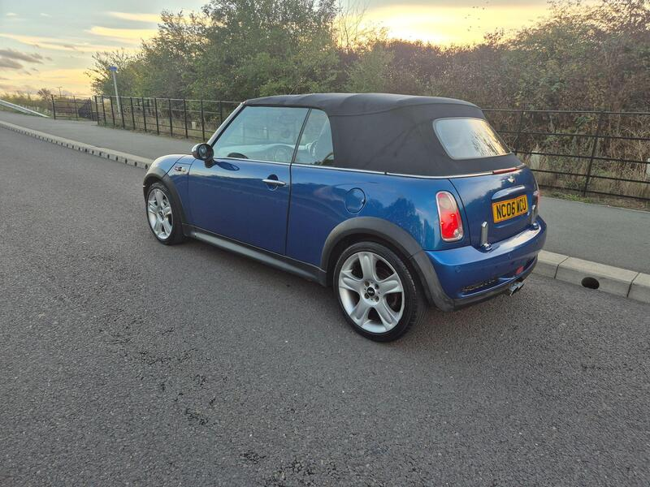

Seller photos from the AutoTrader ad.
MINI Convertible 1.6 Cooper S Steptronic
A supercharged Cooper S for under £2k.
Key facts
| Price | £1,995 |
|---|---|
| Year | 2006 |
| Miles | 94,000 |
| Model | MINI Convertible 1.6 Cooper S Steptronic |
| Colour | Blue |
| Registration | 2006 (06 reg) |
| Service history | Full |
| MOT | Not stated |
| Seller | Trade |
| Location | Windsor |
| From GU7 | 22 mi (AutoTrader) |
| Checked | 13 Oct 2026 |
Why buy it
- Cooper S with full service history (ad)
- Roof 'almost like new' (ad)
Things to check
Steptronic automatic: a torque-converter auto on the Cooper S, not the CVT that fails on the R52 One/Cooper. Still test it carefully
R52 Cooper S: check the power-steering pump
Documentation fee (ad)
- MINI Convertible R52/R57 weak spots
Not flagged as a major issue in our sources; check for water ingress via roof drains and seals. R52 CVT auto fails (avoid); supercharged R52 power-steering pump; pre-Nov 2011 Prince timing-chain tensioners; roof hydraulics £395–495 average repair, R57 roof from ~£1,735.
Seller says (extract)
“A well maintained cooper S with full service history. Drives well with no faults or issues. In great / exceptional condition interior and exterior. You will not be disappointed!! Roof is almost like new!! Fullty electric and All functional.... full service History..upgraded sound system, heated front seats, parking sensors and more.. All our cars are subject to documentation fee, please call for further details. Part exchange possible, any inspection and test drive are welcome. Delivery service are available…”